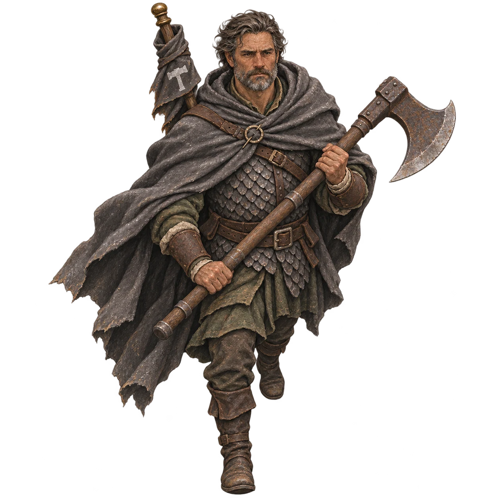

Корона Последнего Угля
Карты и фигурки ведущего
Игровой комплект
6 игроков · 7 игроков · 8 игроков
Карта кампании

Поля боя


Герои


Персонажи ведущего


Противники
 Штурмовик Риорда 6Штурмовик Риорда 2Штурмовик Риорда 1Факельщик гвардии 4Расчёт Жаровни 3Штурмовик Риорда 2Лодочник-штурмовик 3Штурмовик Риорда 2Штурмовик Риорда 4Штурмовик Риорда 1Факельщик гвардии 3Расчёт Жаровни 1Расчёт Жаровни 4Расчёт Жаровни 2Факельщик гвардии 1Штурмовик Риорда 5Лодочник-штурмовик 4Лодочник-штурмовик 2Штурмовик Риорда 3Штурмовик Риорда 4Штурмовик Риорда 4Штурмовик Риорда 5Факельщик гвардии 3Штурмовик Риорда 3Лодочник-штурмовик 8Лодочник-штурмовик 7Факельщик гвардии 2Штурмовик Риорда 3Лодочник-штурмовик 1Расчёт Жаровни 3Гвардеец маршала 1Штурмовик Риорда 5Лодочник-штурмовик 6Лодочник-штурмовик 5Штурмовик Риорда 1
Штурмовик Риорда 6Штурмовик Риорда 2Штурмовик Риорда 1Факельщик гвардии 4Расчёт Жаровни 3Штурмовик Риорда 2Лодочник-штурмовик 3Штурмовик Риорда 2Штурмовик Риорда 4Штурмовик Риорда 1Факельщик гвардии 3Расчёт Жаровни 1Расчёт Жаровни 4Расчёт Жаровни 2Факельщик гвардии 1Штурмовик Риорда 5Лодочник-штурмовик 4Лодочник-штурмовик 2Штурмовик Риорда 3Штурмовик Риорда 4Штурмовик Риорда 4Штурмовик Риорда 5Факельщик гвардии 3Штурмовик Риорда 3Лодочник-штурмовик 8Лодочник-штурмовик 7Факельщик гвардии 2Штурмовик Риорда 3Лодочник-штурмовик 1Расчёт Жаровни 3Гвардеец маршала 1Штурмовик Риорда 5Лодочник-штурмовик 6Лодочник-штурмовик 5Штурмовик Риорда 1 Гвардеец маршала 1Гвардеец маршала 1Гвардеец маршала 3Гвардеец маршала 3Гвардеец маршала 2Гвардеец маршала 1Гвардеец маршала 2Гвардеец маршала 2Гвардеец маршала 2Гвардеец маршала 2
Гвардеец маршала 1Гвардеец маршала 1Гвардеец маршала 3Гвардеец маршала 3Гвардеец маршала 2Гвардеец маршала 1Гвардеец маршала 2Гвардеец маршала 2Гвардеец маршала 2Гвардеец маршала 2

Ормунд Сайр, капитан гвардии